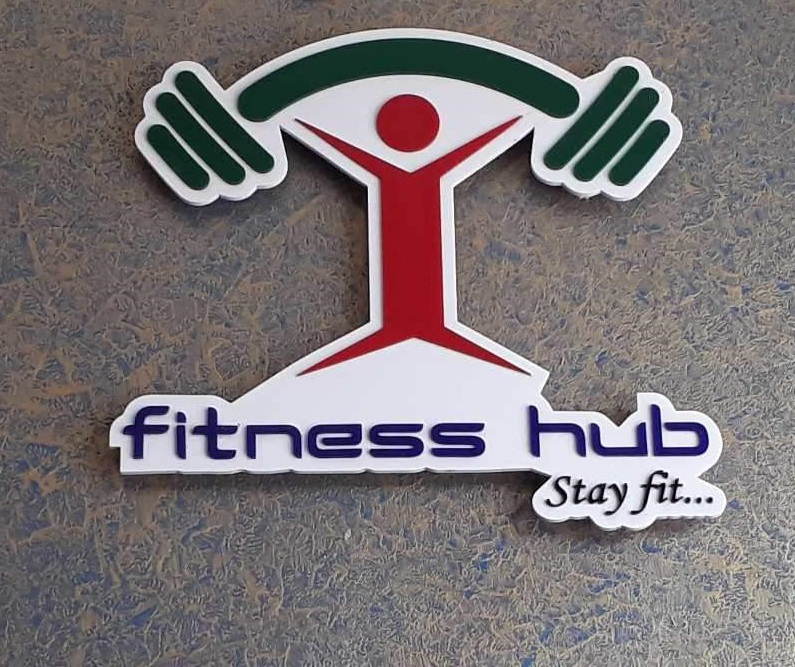
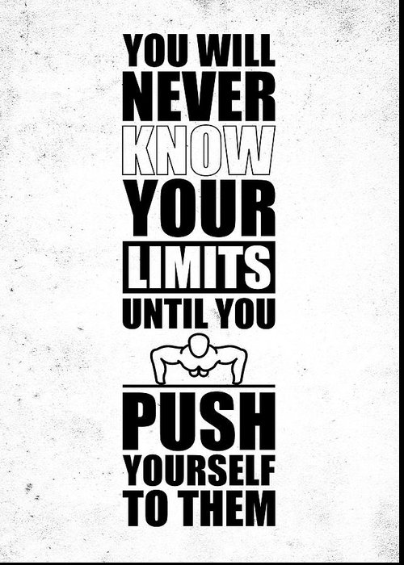

|  | home | about us | articles | feedback |
|---|
YOURSELF AND YOU WILL BE UNSTOPPABLE |
ARTICLE-1 According to guidelines from the U.S. Department of Health and Human Services (HHS), for general health adults should aim for 150 to 300 minutes of moderate physical activity or 75 to 150 minutes of vigorous-intensity aerobic physical activity each week. (1) When repeated regularly, aerobic activity improves cardiorespiratory fitness. Running, brisk walking, swimming, and cycling are all forms of aerobic activity. Additionally, HHS encourages balance and stretching activities to enhance flexibility, as well as muscle-strengthening workouts two or more times a week. Older adults should focus more on balance exercises like tai chi, which has been shown to improve stability and decrease fracture risk in older adults, according to a 2013 review published in December 2013 in the European Journal of Integrative Medicine — and continue to do as much aerobic and muscle-strengthening activities as their bodies can handle. |
|
There's more good news. Research also shows that exercise enhances sleep, prevents weight gain, and reduces the risk of high blood pressure, stroke, type 2 diabetes, and even depression. "One study found that when breast cancer survivors engaged in exercise, there were marked improvements in physical activity, strength, maintaining weight, and social well-being," explains Rachel Permuth-Levine, PhD, deputy director for the Office of Strategic and Innovative Programs at the National Heart, Lung, and Blood Institute of the National Institutes of Health. "Another study looked at patients with stable heart failure and determined that exercise relieves symptoms, improves quality of life, reduces hospitalization, and in some cases, reduces the risk of death," adds Dr. Permuth-Levine. She points out that exercise isn't just important for people who are already living with health conditions: "If we can see benefits of moderate exercise in people who are recovering from disease, we might see even greater benefits in those of us who are generally well." |
|
The number one reason most people say they don't exercise is lack of time. If you find it difficult to fit extended periods of exercise into your schedule, keep in mind that short bouts of physical activity in 10-minute segments will nonetheless help you achieve health benefits. Advises Permute-Levine, "Even in the absence of weight loss, relatively brief periods of exercise every day reduce the risk of cardiovascular disease." Set realistic goals and take small steps to fit more movement into your daily life, such as taking the stairs instead of the elevator and walking to the grocery store instead of driving. "The key is to start gradually and be prepared," says Permuth-Levine. "Have your shoes, pedometer, and music ready so you don't have any excuses." To help you stick with your new exercise habit, vary your routine, like swimming one day and walking the next. Get out and start a baseball or soccer game with your kids. Even if the weather doesn't cooperate, have a plan B — use an exercise bike in your home, scope out exercise equipment at a nearby community centre, or consider joining a health club. The trick is to get to the point where you look at exercise like brushing your teeth and getting enough sleep — as essential to your well-being. Remember that physical fitness is attainable. Even with small changes, you can reap big rewards that will pay off for years to come. |
 |